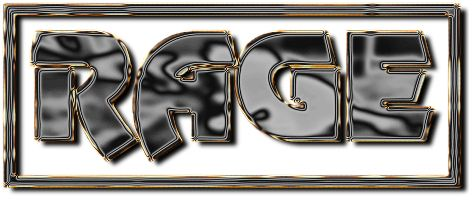
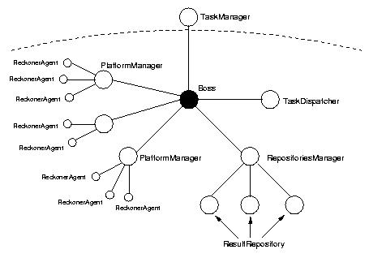

Patrice Boulanger
- DESS TIIR 2000/2001
Ce
projet a été développé dans le cadre du projet
technique du DESS TIIR, sous la direction de
Yann
Secq du laboratoire SMAC (Systèmes
Multi Agents Coopératifs). L'objectif principal a été
de concevoir un framework permettant de développer des applications
distribuées fiables et performantes en un minimum de temps. L'une
des originalités de RAGE est de s'appuyer sur le Système
Multi Agents (SMA) Magique
développé par le laboratoire SMAC.

Le framework peut être divisé en deux parties:
-
la partie "serveur": constituée
de plusieurs agents dont le rôle consiste à gérer la
distribution des tâches, effectuer les calculs ou stocker les résultats.
Les différents agents doivent être lancés sur les différentes
plateformes. Le seul agent devant être connu des applications est
le Boss qui est au sommet de la hiérarchie. En se connectant
sur celui-ci les applications peuvent communiquer avec les autres agents
du framework;
-
la partie "client": c'est la partie
spécifique à une application. Elle est constituée
d'un seul agent (le TaskManager) qui permet de communiquer avec
le reste de la hiérarchie et qui représente l'aspect algorithmique.
Le TaskManager peut déposer des tâches dans le TaskDispatcher,
vérifier le nombre de résultats dans le ResultRepository
et les récupérer pour les exploiter en local.
Comme il a été dit dans l'introduction, le but principal
à atteindre est de fournir un moyen de développer rapidement
et facilement des applications distribuées. Le développeur
ne doit connaître que peu de classes et de méthodes pour utiliser
RAGE.
L'appel aux compétences des autres agents du framework
se fait facilement, sans
avoir à se préoccuper de
la localisation ou du nombre d'agents présents dans la hiérarchie.
La description complète de l'architecture, des exemples d'applications
ainsi que des détails sur les algorithmes utilisés sont disponibles
à l'adresse:
http://www.lifl.fr/~secq/projects/rage/site
Last
modified: Sun Mar 25 14:51:15 CEST 2001